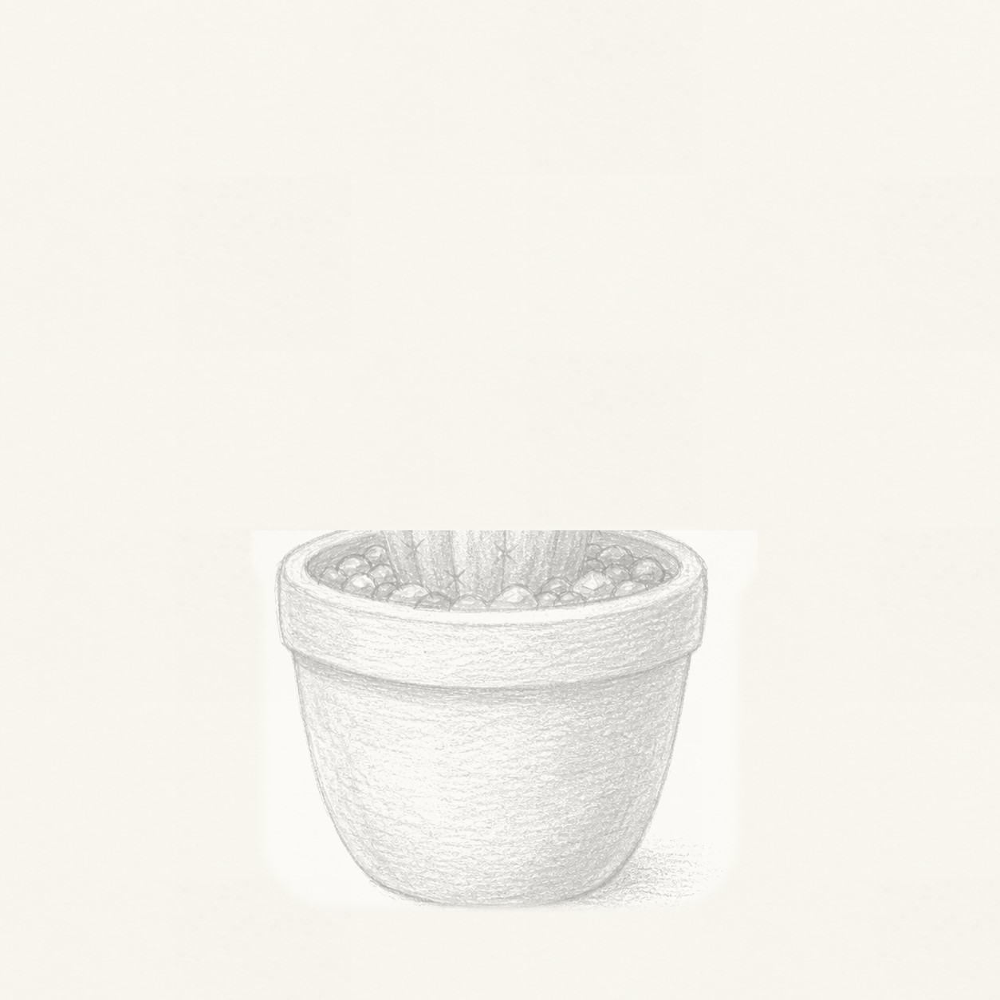
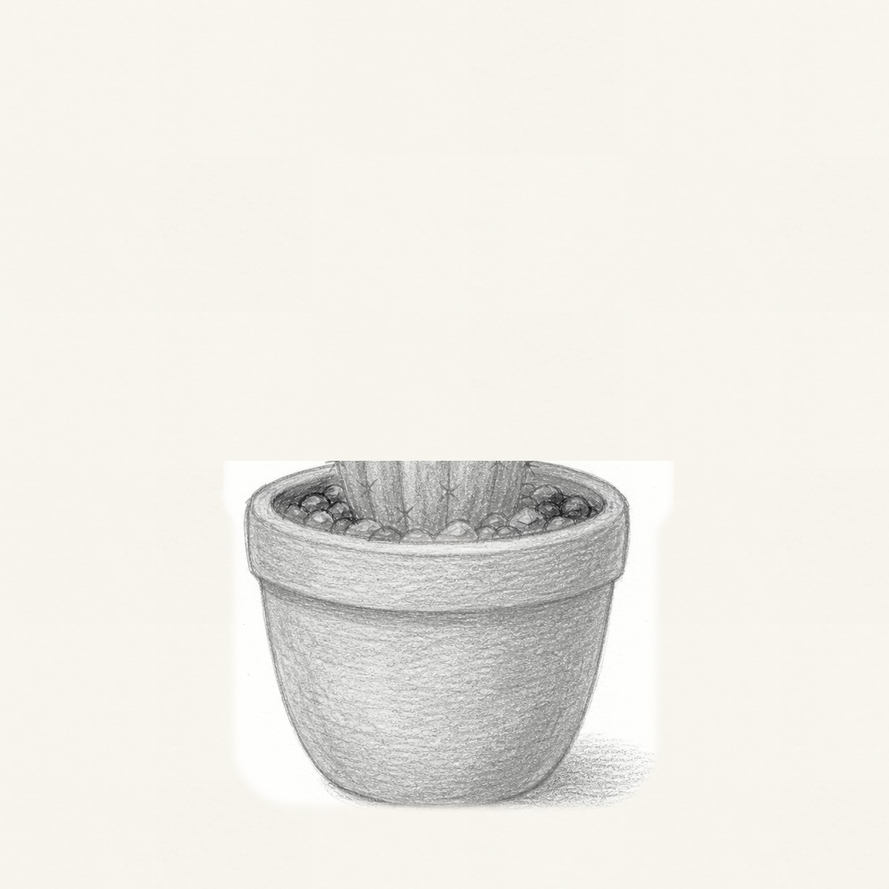
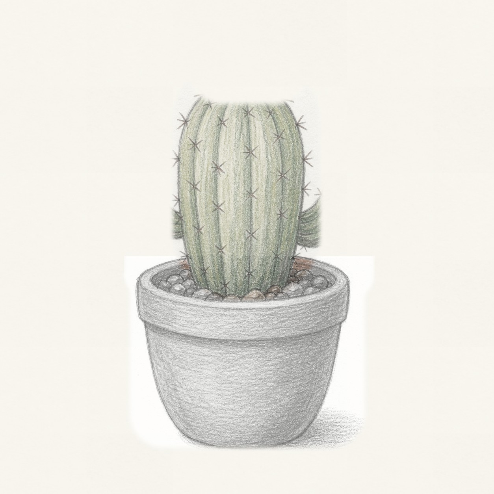
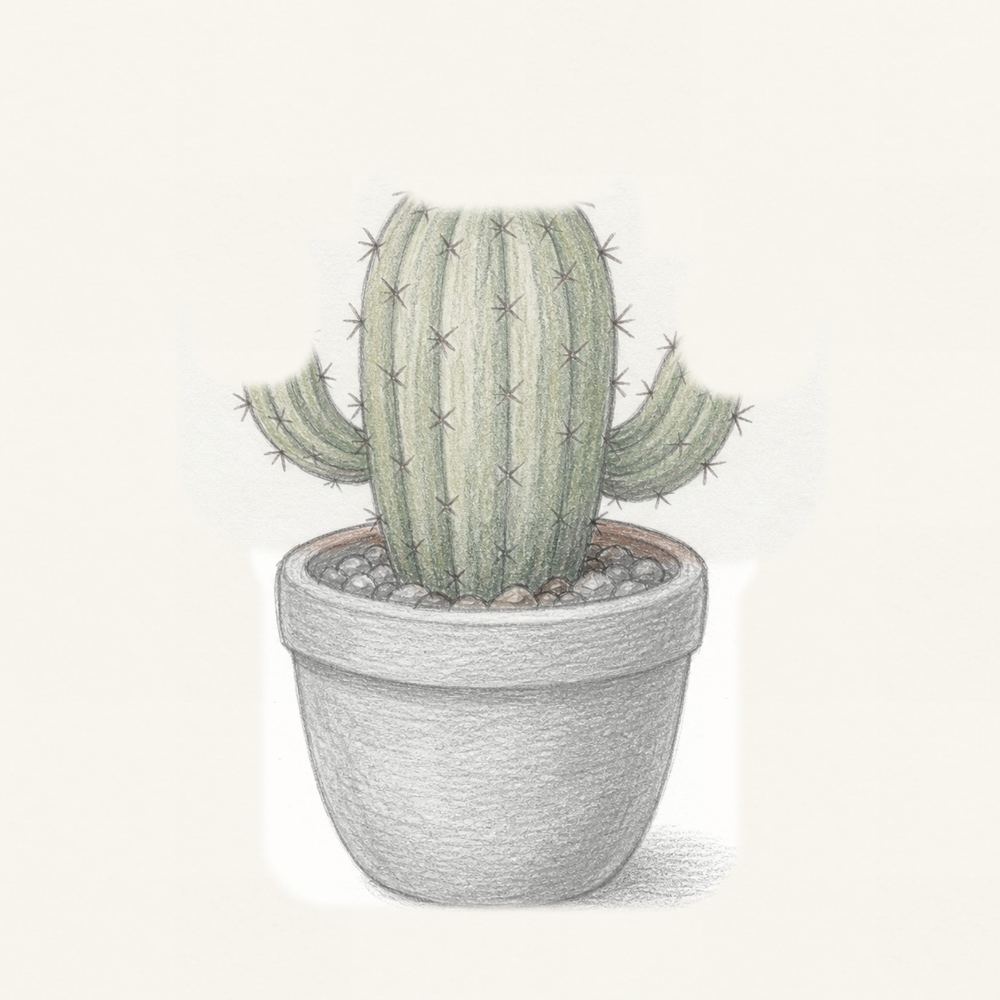
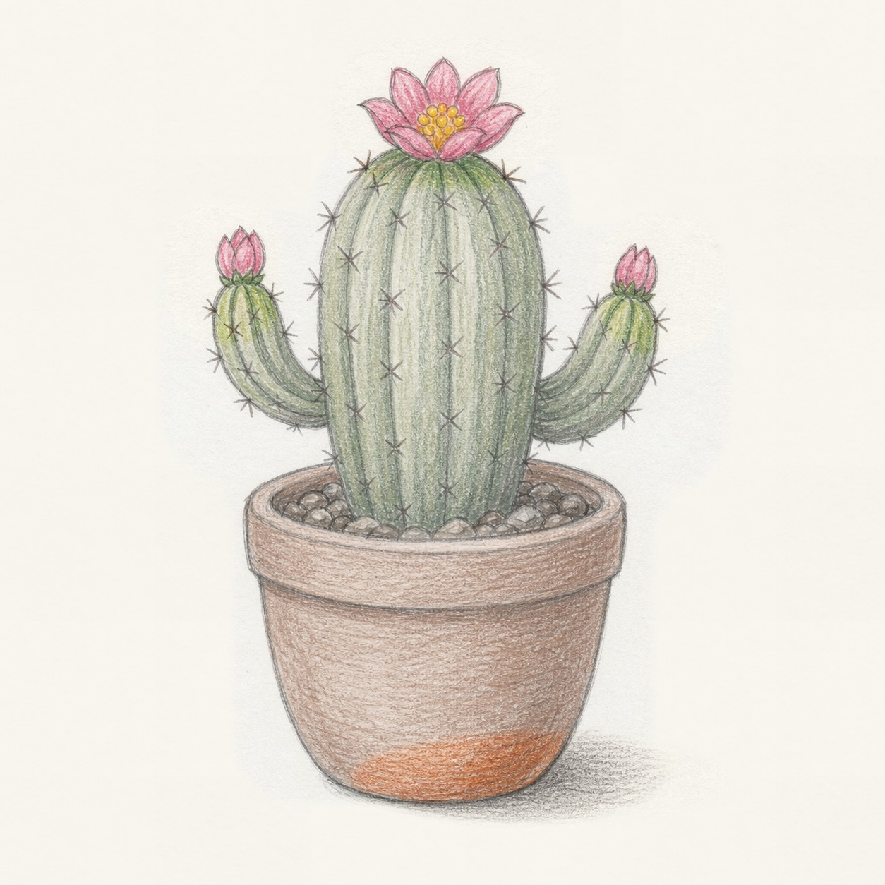

From the archive
Let's draw a potted cactus
Work lightly through the construction, then darken only the lines that help the finished sketch.
-
01

Block in the clay pot
Draw a wide U-shaped pot wall, then add a thick oval rim across the top and a shallow curve along the bottom edge.
Sketch tip: Keep the pot wider than the cactus will be. That stable base makes the tall plant feel balanced.
-
02

Add the soil and gravel
Place a smaller oval inside the rim, then scatter uneven pebble shapes along that soil line.
Sketch tip: Vary the pebble sizes and leave gaps. A few dark stones read better than a row of identical circles.
-
03

Grow the main cactus
Rise from the center of the pot with a tall rounded cactus body, then curve several vertical rib lines from top to bottom.
Sketch tip: Let the ribs follow the cactus sides. Straight stripes can flatten the rounded form.
-
04

Attach the cactus arms
Add one shorter arm on each side, curving them upward from behind the main body and giving each arm its own rib lines.
Sketch tip: Start the arms low and keep them smaller than the center cactus so the silhouette stays clear.
-
05

Place flowers, spines, and color
Set an open flower on top, add two small side buds, mark tiny star spines along the ribs, then shade the cactus green and the pot terracotta.
Sketch tip: Use light colored-pencil pressure first. The spines should stay sharp, so do not bury them under heavy color.
-
06
Finish the keeper lines
Deepen the pot rim, cactus edges, flower petals, gravel, and cast shadow, clarifying only the shapes already in place.
Sketch tip: Stop before every rib is equally dark. A few strong lines and a few soft lines make the cactus feel handmade.